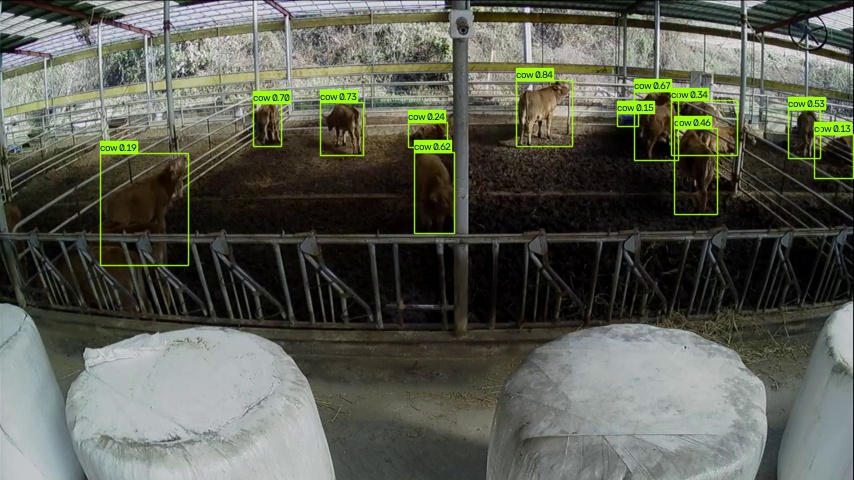

Lesson 05 / 14
Fine-tuning and Evaluating YOLO
Starting from YOLO11s weights pretrained on COCO, we apply transfer learning with the barn dataset built in the previous lesson. This achieves high performance with far less data and time than training from scratch.
1. Training code
📄 scripts/train.py
"""Fine-tune the student model (YOLO11s).
usage: python scripts/train.py --epochs 60
Output: models/hanwoo_yolo11s.pt (copy of runs/hanwoo/train/weights/best.pt)
"""
import argparse
import shutil
import sys
from pathlib import Path
ROOT = Path(__file__).resolve().parent.parent
sys.path.insert(0, str(ROOT))
def main():
ap = argparse.ArgumentParser()
ap.add_argument("--data", default=str(ROOT / "data/hanwoo_ds/hanwoo.yaml"))
ap.add_argument("--model", default=str(ROOT / "models/yolo11s.pt")) # start from COCO-pretrained weights (transfer learning)
ap.add_argument("--epochs", type=int, default=60)
ap.add_argument("--imgsz", type=int, default=960)
ap.add_argument("--batch", type=int, default=16)
a = ap.parse_args()
from ultralytics import YOLO
model = YOLO(a.model)
model.train(
data=a.data, epochs=a.epochs, imgsz=a.imgsz, batch=a.batch, device=0, workers=4,
project=str(ROOT / "runs/hanwoo"), name="train", exist_ok=True,
patience=20, cos_lr=True, close_mosaic=10,
# augmentation for fixed-camera barn video: horizontal flip yes, vertical flip no, brightness (HSV) changes for day/night
fliplr=0.5, flipud=0.0, hsv_v=0.4, degrees=0.0, scale=0.4, mosaic=1.0, mixup=0.0,
plots=True,
)
best = ROOT / "runs/hanwoo/train/weights/best.pt"
dst = ROOT / "models/hanwoo_yolo11s.pt"
shutil.copy(best, dst)
print("saved:", dst)
metrics = YOLO(str(dst)).val(data=a.data, imgsz=a.imgsz, device=0, plots=False)
print("val mAP50:", metrics.box.map50, "mAP50-95:", metrics.box.map)
if __name__ == "__main__":
main()Key hyperparameters
| Parameter | Value | Reason |
|---|---|---|
imgsz | 960 | Larger than the default (640) to handle small, distant cattle |
epochs / patience | 60 / 20 | Stop early if validation performance doesn't improve for 20 epochs |
cos_lr | True | Gradually lowers the learning rate along a cosine curve → stable convergence |
mosaic / close_mosaic | 1.0 / 10 | Augmentation that stitches 4 images together for varied batches; the last 10 epochs finish on real images |
flipud | 0 | With a fixed camera, an upside-down animal can never appear |
hsv_v | 0.4 | Handles brightness changes across seasons and times of day |
2. Run
python scripts/train.py --epochs 60 --imgsz 960 --batch 16About 75 seconds per epoch on a TITAN RTX. Training results are saved to runs/hanwoo/train/, and the best weights are copied to models/hanwoo_yolo11s.pt.
3. Results (validation set: cow02 and cow09, not used for training)
Epochs trained60
best epoch46
Precision0.971
Recall0.972
mAP500.990
mAP50-950.852

How to read the metrics
- Precision: of everything the model called a cow, the fraction that really is a cow — low means many false positives
- Recall: of all real cattle, the fraction the model found — low means many missed animals → broken tracks
- mAP50: mean average precision when a box counts as correct if it overlaps the ground truth by 50% or more
- mAP50-95: the average as the overlap threshold is tightened from 50% to 95% — also reflects box localization accuracy
4. Before vs. after training (same YOLO11s)


Caution: the validation labels are also auto-labels made by the teacher, so the scores above measure “how well the student imitates the teacher”. Evaluated against human-reviewed labels, the scores may come out somewhat lower. Even so, the student is tens of times faster than the teacher with no bale false positives, and that carries through to tracking quality.